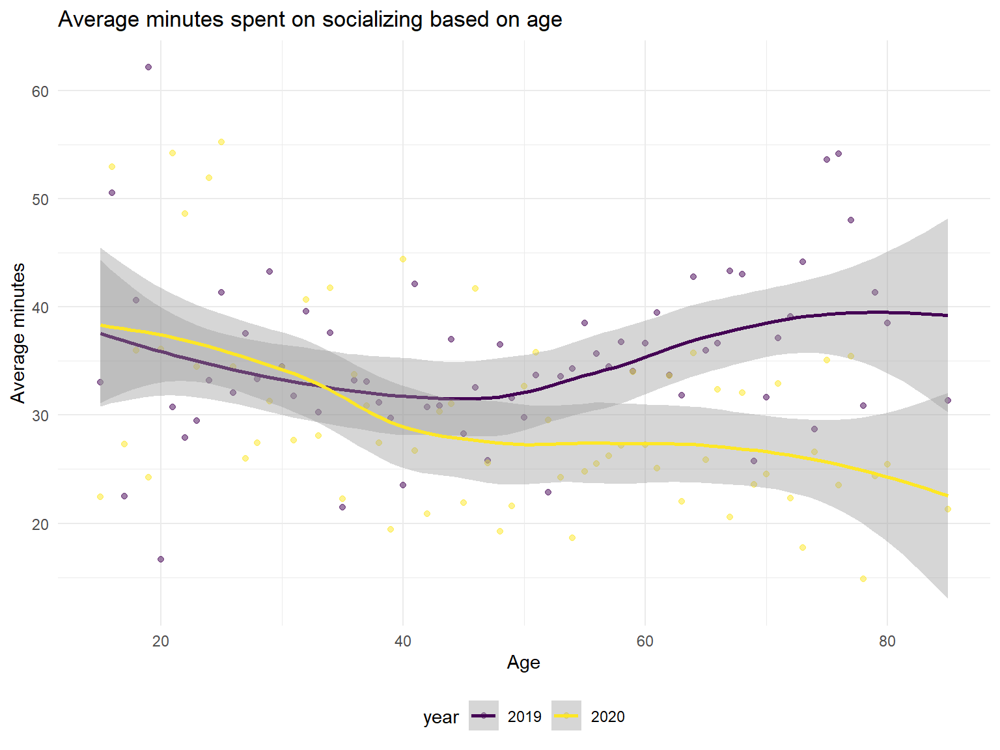

Exploratory Analyses
summary_household_category = read_csv("data/summary_household_category.csv")
summary_household_category <- summary_household_category %>% mutate(
category = replace(category, category == "caring_duties", "caring duties"),
category = replace(category, category == "eating_drinking", "eating/drinking"),
category = replace(category, category == "gov_civic_obligations", "gov/civic obligations"),
category = replace(category, category == "personal_care", "personal care"),
category = replace(category, category == "professional_services", "professional services"),
category = replace(category, category == "religious_spiritual", "religious/spiritual"))Impact of COVID-19 on time use
Has the way we spend time on different categories changed due to the pandemic? See the table below for average daily hours spent on categories of activities in 2019 versus 2020, and the percent change.
summary_household_category %>%
drop_na() %>%
group_by(year, category) %>%
summarize(sum_product = sum(category_sum_hour_weight),
sum_weight = sum(weight)) %>%
mutate(average_hours = round(sum_product/sum_weight, 1)) %>%
subset(select = -c(sum_product,sum_weight)) %>%
pivot_wider(names_from = "year",
values_from = "average_hours") %>%
mutate(percent_change = round((`2020` - `2019`)*100/`2019`, 1)) %>%
arrange(desc(`2019`)) %>%
knitr::kable()| category | 2019 | 2020 | percent_change |
|---|---|---|---|
| sleep | 8.9 | 9.0 | 1.1 |
| leisure | 4.7 | 5.0 | 6.4 |
| work | 3.3 | 3.1 | -6.1 |
| household | 1.8 | 2.0 | 11.1 |
| traveling | 1.2 | 0.8 | -33.3 |
| eating/drinking | 1.1 | 1.1 | 0.0 |
| personal care | 0.8 | 0.7 | -12.5 |
| caring duties | 0.6 | 0.5 | -16.7 |
| education | 0.4 | 0.4 | 0.0 |
| shopping | 0.4 | 0.3 | -25.0 |
| exercise | 0.3 | 0.3 | 0.0 |
| professional services | 0.1 | 0.1 | 0.0 |
| religious/spiritual | 0.1 | 0.1 | 0.0 |
| telephone | 0.1 | 0.2 | 100.0 |
| volunteer | 0.1 | 0.1 | 0.0 |
| gov/civic obligations | 0.0 | 0.0 | NaN |
Comparison of time use: 2019 vs 2020
We can visualize this with the bar plot shown below.
summary_household_category %>%
drop_na() %>%
group_by(year, category) %>%
summarize(sum_product = sum(category_sum_hour_weight),
sum_weight = sum(weight)) %>%
mutate(average_hours = round(sum_product/sum_weight, 1)) %>%
subset(select = -c(sum_product,sum_weight)) %>%
mutate(year = as.factor(year)) %>%
ggplot(aes(x = forcats::fct_reorder(category, average_hours, .desc = TRUE), y = average_hours, fill = year)) +
geom_bar(stat = "identity", position = "dodge") +
theme(axis.text.x = element_text(angle = 90, vjust = 0.5, hjust = 1)) +
labs(
y = "Average Hours",
x = "Categories",
title = "Average hours spent in each category"
)
Some notable changes from 2019 to 2020 include increases in time spent on leisure and household activities and decreases in time spent on work and travel.
We were also curious to see if time spent on activities varied from month to month during 2020. The interactive plot below displays average daily hours spent per month on different categories of activities. Note that month 4 (April) is missing observations due to a pause in data collection because of the pandemic. To see trends for different activity categories, click on the activity categories legend on the right-hand side of the plot.
Monthly trends: 2020
actsum_cps_2020 = summary_household_category %>%
filter(year == 2020)
resp_2020 = read.table("data/atusresp_2020.dat", header = TRUE, sep = ",")
resp_2020_tidied = resp_2020 %>%
dplyr::select(TUCASEID, TULINENO, TUYEAR, TUMONTH, TUDIARYDAY, TUDIARYDATE) %>%
mutate(date = lubridate::ymd(TUDIARYDATE)) %>%
separate(date, c("year", "month", "date")) %>%
mutate(month = month.name[as.numeric(month)]) %>%
mutate(year = as.numeric(year)) %>%
mutate(TUDIARYDATE = str_replace(TUDIARYDATE, "2020", "")) %>%
filter(TUYEAR == 2020) %>%
dplyr::select(-TUYEAR, -TUMONTH, -TULINENO) %>%
mutate(
tudiaryday = factor(TUDIARYDAY, levels = c(1,2,3,4,5,6,7), labels = c("sunday", "monday", "tuesday", "wednesday", "thursday", "friday", "saturday"))) %>%
arrange(TUCASEID, month, date, year, TUDIARYDATE, tudiaryday)
merged_actsum_cps_resp_2020 = left_join(actsum_cps_2020, resp_2020_tidied, by = c("TUCASEID")) %>% janitor::clean_names()
category_time_month_2020 = merged_actsum_cps_resp_2020 %>%
drop_na() %>%
filter(category %in% c("sleep", "leisure",
"work", "household",
"traveling", "eating_drinking",
"personal_care", "caring_duties")) %>%
group_by(month, category) %>%
summarize(sum_product = sum(category_sum_hour_weight),
sum_weight = sum(weight)) %>%
mutate(average_hours = round(sum_product/sum_weight, 1)) %>%
subset(select = -c(sum_product,sum_weight)) %>%
mutate(
month = as.factor(month)) %>%
mutate(month = match(month, month.name)) %>%
mutate(
category = replace(category, category == "caring_duties", "caring duties"),
category = replace(category, category == "eating_drinking", "eating/drinking"),
category = replace(category, category == "personal_care", "personal care"),
) %>%
arrange(month)
monthly_2020_plotly_hours = category_time_month_2020 %>%
mutate(text_label = str_c("Activity: ", category, "\nAverage hours: ", average_hours, "\nMonth: ", month)) %>%
plot_ly(
x = ~month, y = ~average_hours, type = "scatter", mode = "line",
color = ~category, text = ~text_label, alpha = 0.9) %>%
layout(title = 'Average time spent on activities across the U.S. in 2020',
annotations = list(x = 2.5, y = 3, text = "month 4 missing"),
xaxis = list(type = "category", title = 'Month'),
yaxis = list(title = 'Average Hours'))
`%not_in%` <- purrr::negate(`%in%`)
category_time_month_2020 = merged_actsum_cps_resp_2020 %>%
drop_na() %>%
filter(category %not_in% c("sleep", "leisure",
"work", "household",
"traveling", "eating_drinking",
"personal_care", "caring_duties")) %>%
group_by(month, category) %>%
summarize(sum_product = sum(category_sum_hour_weight),
sum_weight = sum(weight)) %>%
mutate(average_minutes = round(sum_product*60/sum_weight, 1)) %>%
subset(select = -c(sum_product,sum_weight)) %>%
mutate(
month = as.factor(month)) %>%
mutate(month = match(month, month.name)) %>%
mutate(
category = replace(category, category == "gov_civic_obligations", "gov/civic obligations"),
category = replace(category, category == "professional_services", "professional services"),
category = replace(category, category == "religious_spiritual", "religious/spiritual")
) %>%
arrange(month)
monthly_2020_plotly_minutes = category_time_month_2020 %>%
mutate(text_label = str_c("Activity: ", category, "\nAverage minutes: ", average_minutes, "\nMonth: ", month)) %>%
plot_ly(
x = ~month, y = ~average_minutes, type = "scatter", mode = "line",
color = ~category, text = ~text_label, alpha = 0.9) %>%
layout(title = 'Average time spent on activities across the U.S. in 2020',
annotations = list(x = 2.5, y = 10, text = "month 4 missing"),
xaxis = list(type = "category", title = 'Month'),
yaxis = list(title = 'Average Minutes'))monthly_2020_plotly_hoursmonthly_2020_plotly_minutesThere is a notable increase in daily hours spent on leisure activities between March and May 2020, though it seems to fluctuate throughout the rest of the year. There is also an increase in time spent on household activities between March and May 2020. Time spent on education took a significant dip during this same time period, potentially due to school shutdowns. It remained low from May until September, which makes sense considering the traditional US school year/summer break timings.
We were also curious to see if time spent socializing changed from 2019 to 2020 due to social distancing measures. Below is a bar chart showing average daily minutes spent socializing in 2019 versus 2020.
Socializing: 2019 vs 2020
We can see that average daily minutes spent socializing dropped from around 35 minutes in 2019 to 30 minutes in 2020.
How did daily time spent on socializing vary depending on age?

Time spent socializing didn’t appeared to remain quite consistent for those between the ages of 15 and 30. Decreases in time spent socializing becomes more prominent for older age groups. This is perhaps due to older adults being more cautious due to their high vulnerability to COVID-19.